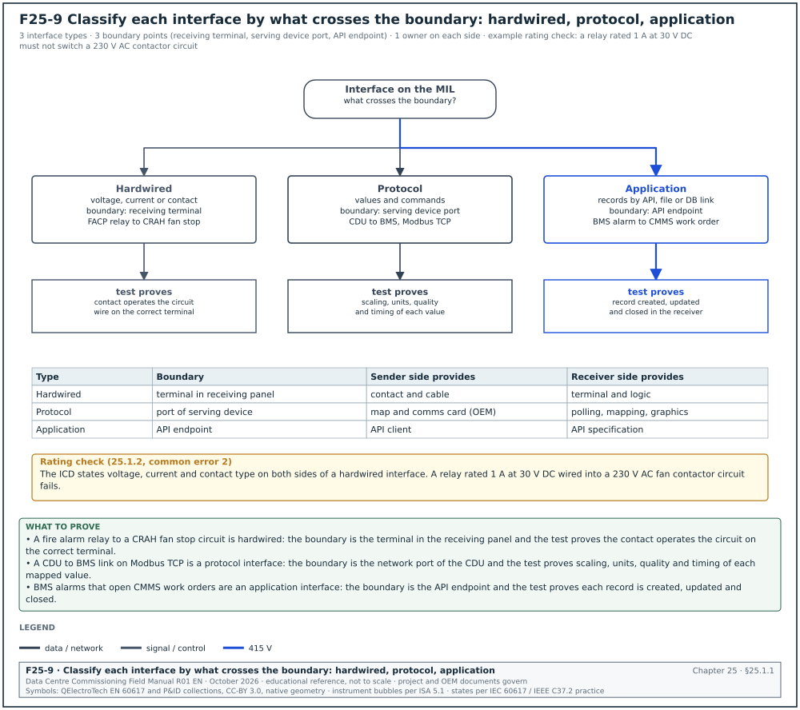
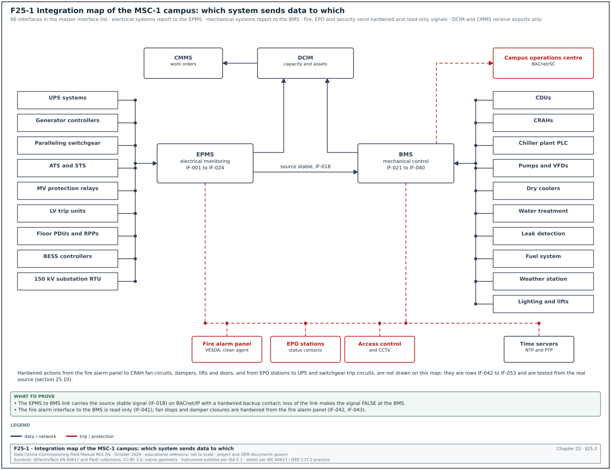
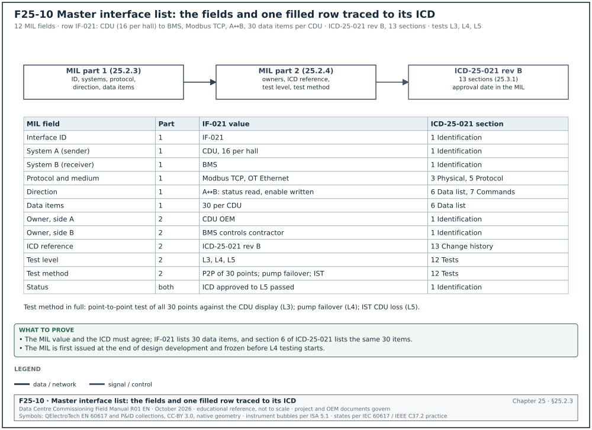
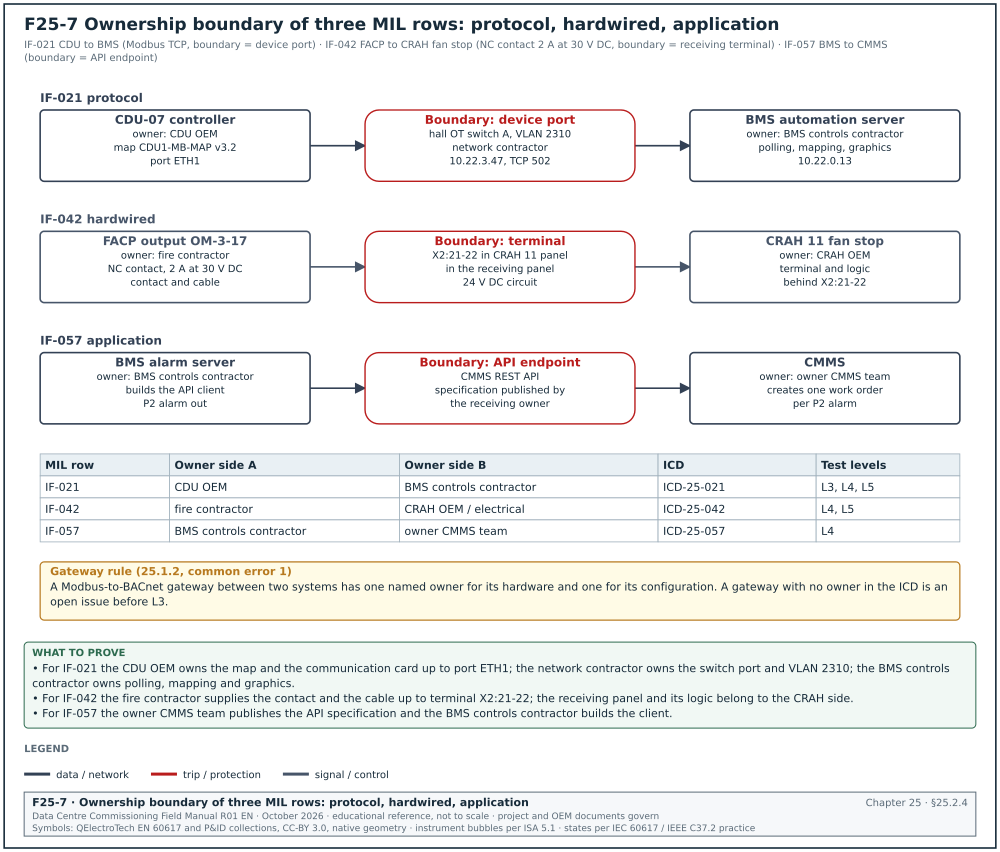
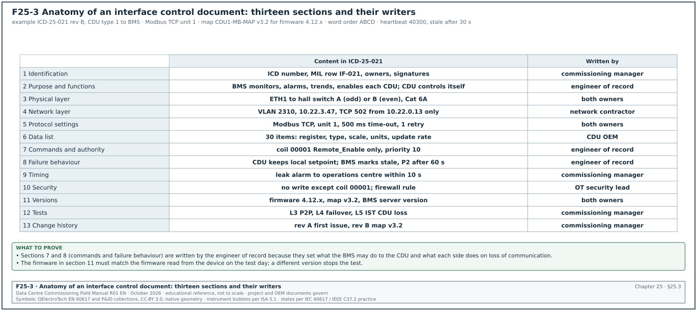
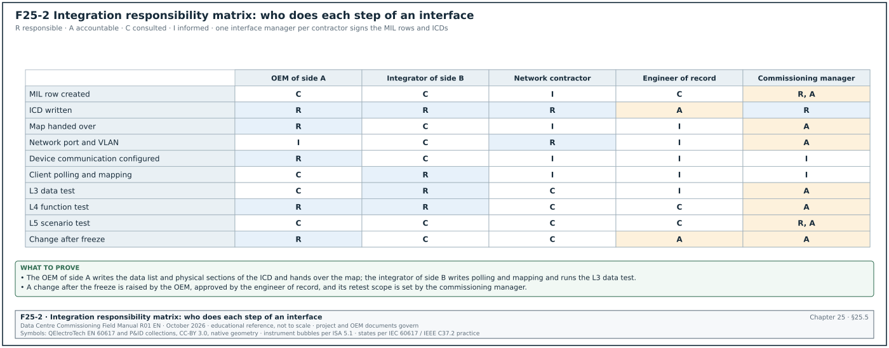
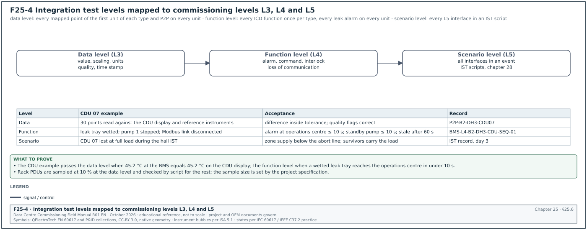
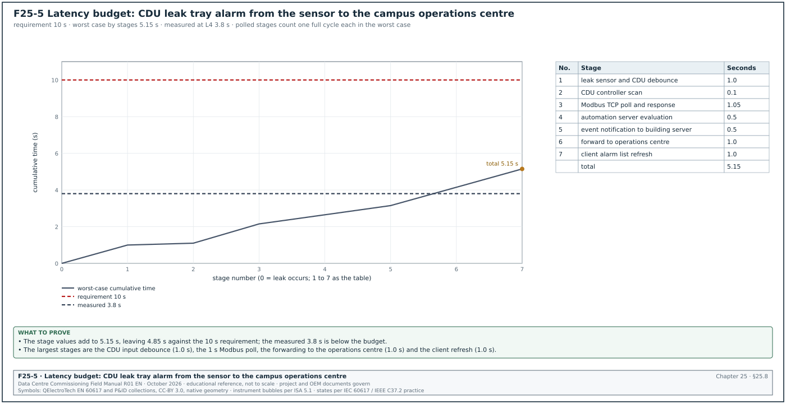
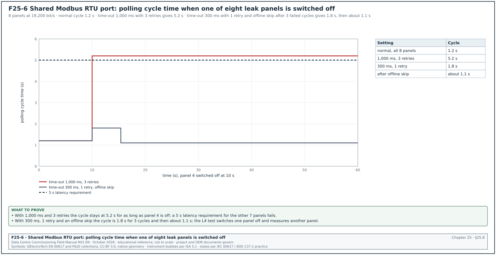
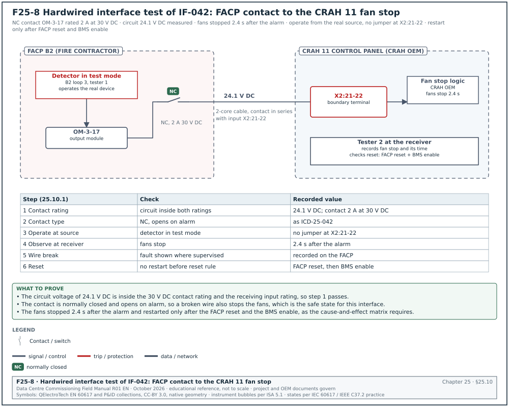

25.0Scope of this chapter
This chapter describes how the interfaces between systems on a hyperscale data-centre campus are listed, specified, handed over and tested. An interface is any place where one system sends a signal, a value or a command to another system that a different contractor or original equipment manufacturer (OEM) supplies. An example is a coolant distribution unit that sends data to the building management system (BMS) or the electrical power monitoring system (EPMS).
- Interface types. The chapter defines hardwired, protocol and application interfaces and the ownership boundary of each.
- Master interface list. It gives the field definitions and a master interface list with 66 rows for the MSC-1 campus. The electrical rows cover the uninterruptible power supply (UPS), generator controllers, automatic transfer switches (ATS) and static transfer switches (STS), medium-voltage (MV) and low-voltage (LV) protection and trip units, power distribution units (PDU) and remote power panels (RPP). The mechanical rows cover coolant distribution units (CDU), computer room air handlers (CRAH), chillers, pumps and variable frequency drives (VFD), dry coolers and leak detection. The fire and security rows cover fire alarm, very early smoke detection apparatus (VESDA), clean agent, emergency power-off (EPO), access control and closed-circuit television (CCTV). The software rows cover data centre infrastructure management (DCIM) and the computerised maintenance management system (CMMS). The site rows cover the supervisory control and data acquisition (SCADA) interface of PLN (Perusahaan Listrik Negara, the Indonesian state electricity company), battery energy storage system (BESS), fuel system, water treatment, lighting, lifts, weather station and time servers.
- Interface control documents. It gives the content of an interface control document (ICD) with a filled example, and the rules for handing over Modbus and BACnet maps.
- Responsibility matrix. It gives the integration responsibility matrix by role and by step.
- Integration testing. It defines three test levels (data, function, scenario), gives the test steps and a filled test record, and a data latency budget with a worked example.
- Common integration failures. It lists the failures seen on data-centre projects: word order, scaling, polling rates, duplicate identifiers, stale data and firmware changes. For each one it gives the check that detects it before the witness test.
- Documents and standards used. ANSI/ASHRAE 135-2024 (BACnet), the Modbus Application Protocol Specification V1.1b3 and the Modbus over Serial Line Specification V1.02. Also the Internet Assigned Numbers Authority (IANA) port registry, the Amazon Web Services (AWS) Tokyo event summary of 2019 and the Uptime Institute Annual Outage Analysis 2024. The chapter also uses chapters 20, 21, 22, 23, 24, 26 and 28 of this manual.
25.1Interface types and ownership boundaries
25.1.1Three types of interface
Every interface is one of three types, set by what crosses the boundary. Figure F25-9 shows how to classify an interface, where the boundary sits for each type and what the interface test must prove.


| Type | What crosses the boundary | Example on the campus | What the test proves |
|---|---|---|---|
| Hardwired | A voltage, current or contact state on a cable | Fire alarm relay to CRAH fan stop circuit; EPO station to UPS trip input | The contact operates the receiving circuit; the wire is on the correct terminal |
| Protocol | Values and commands in a communication protocol | CDU to BMS on Modbus Transmission Control Protocol (TCP); CRAH to BMS on BACnet/IP; UPS to DCIM on Simple Network Management Protocol (SNMP) | Each mapped value arrives with the correct scaling, units, quality and timing |
| Application | Records exchanged between software applications by an application programming interface (API), file transfer or database link | BMS alarms to CMMS work orders; DCIM asset records to CMMS | Each record type is created, updated and closed in the receiving application |
25.1.2The ownership boundary
Each interface has two sides. Each side has one owner. The boundary is a physical point (a terminal, a switch port) or a logical point (a register map, an API endpoint). The ICD states the boundary.
- Hardwired boundary. The boundary is the terminal in the receiving panel. The sending contractor provides the contact and the cable to the terminal, unless the ICD says otherwise. The receiving contractor provides the terminal and the logic behind it.
- Protocol boundary. The boundary is the network port of the device that serves the data (the Modbus server, the BACnet device). The OEM of that device provides the map and the configuration of its communication card. The client contractor (the BMS or EPMS integrator) provides the polling configuration, the mapping into its database and the graphics.
- Network boundary. The network contractor provides the switch port, the virtual local area network (VLAN), the Internet Protocol (IP) address allocation and the firewall rules (chapter 26). The ICD lists the network details.
- Application boundary. The boundary is the API endpoint. The owner of the receiving application publishes the API specification. The sending application owner builds the client.
Common errors:
- No owner for the gateway. A Modbus-to-BACnet gateway between a CDU and the BMS is supplied by the CDU OEM and configured by the BMS contractor. When it fails, each party says the gateway belongs to the other. The ICD names one owner for the gateway hardware and one for its configuration.
- Relay contacts with no rating stated. A fire alarm relay rated 1 A at 30 V direct current (DC) wired into a 230 V alternating current (AC) fan contactor circuit fails. The ICD states voltage, current and contact type on both sides.
25.2The master interface list


25.2.1Purpose and owner
Purpose: The master interface list (MIL) is the register of every interface on the campus. It assigns each interface an identifier, an ICD, an owner on each side, a test level and a test method. It is the input for the integration test plan and for the integrated systems test (IST) scripts in chapter 28.
Owner: The commissioning manager owns the MIL. The engineers of record for electrical, mechanical, fire and controls review it. Each contractor confirms its rows.
Trigger: First issue at the end of design development. It is updated at every submittal approval that adds or changes an interface, and frozen before the start of Level 4 (L4) testing.
25.2.2MIL fields
| Field | Type | Example value |
|---|---|---|
| Interface ID | Text, IF-nnn | IF-021 |
| System A (sender of the main data) | Text | CDU (16 per hall) |
| System B (receiver) | Text | BMS |
| Protocol and physical medium | Text | Modbus TCP over operational technology (OT) Ethernet (copper to hall switch) |
| Direction | Choice: A→B, B→A, A↔B | A↔B (status read, enable written) |
| Data items | Integer per instance | 30 per CDU |
| Owner, side A | Role | CDU OEM |
| Owner, side B | Role | BMS controls contractor |
| ICD reference | Text | ICD-25-021 rev B |
| Test level | Choice: L3 data, L4 function, L5 scenario | L3, L4, L5 |
| Test method | Text | point-to-point (P2P) test of all 30 points against CDU display; pump failover; IST CDU loss |
| Status | Choice | ICD approved / map frozen / L3 passed / L4 passed / L5 passed |
25.2.3Master interface list for the MSC-1 campus, part 1: systems, protocols and data
The data item counts are per instance of system A unless the row says otherwise. They are the MSC-1 worked-example estimates; the approved ICD gives the actual count.


Figure F25-10 shows the twelve MIL fields filled for row IF-021 and the ICD-25-021 section that holds the detail behind each field.
| ID | System A | System B | Protocol and medium | Direction | Data items |
|---|---|---|---|---|---|
| IF-001 | UPS system (each 2.5 MW block) | EPMS | Modbus TCP, OT Ethernet | A→B | 120 |
| IF-002 | UPS system | BMS | Hardwired dry contacts | A→B | 4 (on battery, on bypass, common alarm, summary fault) |
| IF-003 | UPS network card | DCIM | SNMP version 3, OT Ethernet | A→B | 80 |
| IF-004 | Generator controller (17 per building) | EPMS | Modbus TCP, OT Ethernet | A→B | 150 |
| IF-005 | Generator controller | BMS | Hardwired contacts | A→B | 4 (running, fail to start, common alarm, in auto) |
| IF-006 | Generator paralleling switchgear programmable logic controller (PLC) | EPMS | Modbus TCP, OT Ethernet | A→B | 200 |
| IF-007 | Generator controller | Generator room ventilation (BMS) | Hardwired contact | A→B | 1 (run signal starts ventilation) |
| IF-008 | Fuel system PLC | BMS | Modbus TCP, OT Ethernet | A↔B | 60 |
| IF-009 | Fuel system day tank level | Generator controller | Hardwired 4–20 mA and contacts | A→B | 3 (level, low, high) |
| IF-010 | Fuel system PLC | EPMS | Modbus TCP | A→B | 20 |
| IF-011 | ATS (each) | EPMS | Modbus TCP via gateway, RS-485 to gateway | A→B | 30 |
| IF-012 | STS (each) | EPMS | Modbus TCP | A→B | 40 |
| IF-013 | MV protection relays (20 kV) | EPMS | IEC 61850 manufacturing message specification (MMS) or Modbus TCP (as relay model) | A→B | 50 per relay |
| IF-014 | MV protection relays | Substation automation and interlocks | IEC 61850 generic object-oriented substation event (GOOSE) or hardwired | A↔B | 10 per relay |
| IF-015 | LV breaker trip units | EPMS | Modbus remote terminal unit (RTU) protocol to gateway, Modbus TCP to EPMS | A→B | 40 per breaker |
| IF-016 | Floor PDUs and RPPs | EPMS | Modbus TCP | A→B | 80 |
| IF-017 | Rack PDUs (1,200 racks on campus) | DCIM | SNMP version 3 | A→B | 50 per PDU |
| IF-018 | EPMS | BMS | BACnet/IP and one hardwired backup contact | A→B | 6 (source stable per bus, utility available) |
| IF-019 | EPMS | DCIM | Vendor web service or Open Platform Communications Unified Architecture (OPC UA) (Data Exchange Module OPC UA server licence as listed in the release notes and licence schedule of the delivered Power Monitoring Expert (PME) version) | A→B | 2,000 per building |
| IF-020 | BESS controller (2 × 10 MWh) | EPMS | Modbus TCP | A→B | 100 |
| IF-021 | CDU (16 per hall) | BMS | Modbus TCP, OT Ethernet | A↔B | 30 |
| IF-022 | BESS container systems (heating, ventilation and air conditioning (HVAC), fire, gas detection) | BMS | Modbus TCP | A→B | 30 |
| IF-023 | PLN SCADA | 150 kV substation remote terminal unit (RTU) | IEC 60870-5-104 or Distributed Network Protocol 3 (DNP3) as the PLN connection agreement states | A↔B | 40 (example; the point list annex of the PLN connection agreement sets the count) |
| IF-024 | 150 kV substation RTU | EPMS | Modbus TCP or IEC 60870-5-104 | A→B | 50 |
| IF-025 | CDU zone controller | CDUs of the zone | BACnet/IP | A↔B | 10 per CDU (lead, lag, enable, duty) |
| IF-026 | Leak detection (CDU tray) | CDU controller | Hardwired contact | A→B | 1 |
| IF-027 | CRAH (13 per hall) | BMS | BACnet/IP | A↔B | 40 |
| IF-028 | Rack-row sensors (50 per hall) | BMS | BACnet master-slave/token-passing (MS/TP) | A→B | 4 |
| IF-029 | BMS (hall inlet temperatures) | CRAH | BACnet/IP | A→B | 2 per CRAH (average inlet, maximum inlet) |
| IF-030 | Trim chillers | Chiller plant PLC | BACnet/IP or Modbus TCP (as OEM) | A↔B | 80 per chiller |
| IF-031 | Chiller plant PLC | BMS | OPC UA, OT Ethernet | A↔B | 300 |
| IF-032 | Facility water system (FWS) pumps and VFDs | Plant PLC | Hardwired start and speed; Modbus RTU for diagnostics | A↔B | 20 per pump |
| IF-033 | Dry coolers (160 fans on campus) | BMS | BACnet/IP | A↔B | 25 per dry cooler |
| IF-034 | Water treatment skid | BMS | Modbus TCP | A→B | 40 |
| IF-035 | Make-up water tanks and meters | BMS | Hardwired 4–20 mA and pulse | A→B | 10 |
| IF-036 | Leak detection panels | BMS | Modbus RTU via gateway | A→B | 3 per zone |
| IF-037 | Leak detection panel | Branch isolation valve controller | Hardwired contact | A→B | 1 per zone |
| IF-038 | Electrical room ventilation | BMS | BACnet MS/TP | A↔B | 12 per room |
| IF-039 | Battery room ventilation and hydrogen detection | BMS | Hardwired contacts and 4–20 mA | A→B | 6 per room |
| IF-040 | Weather station | BMS | Modbus RTU | A→B | 8 |
| IF-041 | Fire alarm control panel (FACP) | BMS | BACnet/IP high-level interface (read only) | A→B | 200 per building |
| IF-042 | FACP | CRAH fan stop circuits | Hardwired relay per CRAH | A→B | 1 per CRAH |
| IF-043 | FACP | Smoke and fire dampers | Hardwired | A→B | 2 per damper |
| IF-044 | VESDA detectors | FACP | Hardwired relays or VESDA network to FACP interface | A→B | 4 per detector (alert, action, fire 1, fault) |
| IF-045 | VESDA network | BMS | High-level interface (Modbus or BACnet gateway) | A→B | 4 per detector |
| IF-046 | Clean agent release panel | FACP | Hardwired | A↔B | 6 per zone |
| IF-047 | Clean agent release panel | HVAC shutdown and damper closure | Hardwired | A→B | 2 per zone |
| IF-048 | FACP | Access control (door release on alarm) | Hardwired | A→B | 1 per door group |
| IF-049 | EPO stations | UPS and switchgear trip circuits | Hardwired, supervised | A→B | 2 per EPO zone |
| IF-050 | EPO stations | BMS and EPMS (status) | Hardwired contacts | A→B | 2 per EPO zone |
| IF-051 | FACP | Lifts (fire homing) | Hardwired | A→B | 3 per lift group |
| IF-052 | Sprinkler and pre-action valve monitoring | FACP | Hardwired supervised inputs | A→B | 4 per valve |
| IF-053 | Fire pump controller | FACP and BMS | Hardwired contacts | A→B | 6 |
| IF-054 | Access control system | BMS | BACnet/IP or vendor API | A→B | 2 per door (status, forced) |
| IF-055 | Access control system | CCTV video management system | Vendor API | A↔B | Event-based (door forced opens camera view) |
| IF-056 | BMS | DCIM | BACnet/IP or representational state transfer (REST) API (as DCIM product) | A→B | 1,500 per hall |
| IF-057 | BMS | CMMS | REST API or scheduled file transfer | A→B | Alarms, run hours, 200 assets per hall |
| IF-058 | EPMS | CMMS | Scheduled file transfer | A→B | Breaker operation counts, alarms |
| IF-059 | DCIM | CMMS | REST API | A↔B | Asset records, work orders |
| IF-060 | Lighting control system | BMS | BACnet/IP | A↔B | 50 per building |
| IF-061 | Lifts | BMS | BACnet/IP or Modbus TCP via lift gateway | A→B | 6 per lift |
| IF-062 | Campus time servers | BMS servers and automation servers | Network Time Protocol (NTP) | A→B | Time |
| IF-063 | Campus time servers | EPMS servers, meters and relays | NTP; Precision Time Protocol (PTP) where the design requires it | A→B | Time |
| IF-064 | Building BMS servers | Campus operations centre BMS | BACnet Secure Connect (BACnet/SC) or vendor server-to-server protocol | A↔B | Alarms and summary points |
| IF-065 | Rack baseboard management controllers (Redfish) | DCIM | Redfish API (read only) | A→B | Inlet temperature, power per server |
| IF-066 | Temporary heater skids for commissioning | BMS (temporary) | Modbus TCP | A↔B | 20 per skid |
25.2.4Master interface list, part 2: owners, ICD references and tests
Part 2 names the owner on each side of the boundary defined in 25.1.2. Figure F25-7 shows the boundary and the two owners for one protocol row (IF-021), one hardwired row (IF-042) and one application row (IF-057).


| ID | Owner side A | Owner side B | ICD reference | Test level | Test method |
|---|---|---|---|---|---|
| IF-001 | UPS OEM | EPMS integrator | ICD-25-001 | L3, L4, L5 | All mapped points against UPS display; transfer to battery and bypass; IST utility loss |
| IF-002 | UPS OEM | BMS controls contractor | ICD-25-002 | L3, L5 | Operate each contact at the UPS; IST |
| IF-003 | UPS OEM | DCIM vendor | ICD-25-003 | L3, L4 | Poll against UPS display; force alarm, check SNMP notification and poll |
| IF-004 | Generator OEM | EPMS integrator | ICD-25-004 | L3, L4 | Points against controller display; start and load test |
| IF-005 | Generator OEM | BMS controls contractor | ICD-25-005 | L3, L4 | Start generator; check status and alarm at BMS |
| IF-006 | Switchgear OEM | EPMS integrator | ICD-25-006 | L3, L4, L5 | Points; synchronise and load; IST |
| IF-007 | Generator OEM | BMS controls contractor | ICD-25-007 | L4 | Start generator; ventilation starts within the sequence time |
| IF-008 | Fuel system contractor | BMS controls contractor | ICD-25-008 | L3, L4 | Points; transfer pump start on low day tank level |
| IF-009 | Fuel system contractor | Generator OEM | ICD-25-009 | L3, L4 | Level signal calibrated; low level alarm at controller |
| IF-010 | Fuel system contractor | EPMS integrator | ICD-25-010 | L3 | Points against PLC display |
| IF-011 | ATS OEM | EPMS integrator | ICD-25-011 | L3, L4 | Points; transfer and retransfer recorded |
| IF-012 | STS OEM | EPMS integrator | ICD-25-012 | L3, L4 | Points; transfer events with time stamps |
| IF-013 | MV switchgear OEM | EPMS integrator | ICD-25-013 | L3, L4 | Points from relay; trip events and sequence-of-events time stamps |
| IF-014 | MV switchgear OEM | Protection engineer | ICD-25-014 | L4 | GOOSE or wired interlock test (chapter 13) |
| IF-015 | LV switchgear OEM | EPMS integrator | ICD-25-015 | L3, L4 | Points from trip unit; breaker operation recorded |
| IF-016 | PDU OEM | EPMS integrator | ICD-25-016 | L3 | Points against PDU display with load bank current |
| IF-017 | Rack PDU OEM | DCIM vendor | ICD-25-017 | L3 | Sample of 10 % of PDUs against clamp meter |
| IF-018 | EPMS integrator | BMS controls contractor | ICD-25-018 | L4, L5 | Utility loss: source stable signal and staggered restart timing |
| IF-019 | EPMS integrator | DCIM vendor | ICD-25-019 | L3 | Sample of points; time stamps |
| IF-020 | BESS OEM | EPMS integrator | ICD-25-020 | L3, L4 | Points; charge and discharge test |
| IF-021 | CDU OEM | BMS controls contractor | ICD-25-021 | L3, L4, L5 | All points against CDU display; pump failover; IST CDU loss |
| IF-022 | BESS OEM | BMS controls contractor | ICD-25-022 | L3 | Points; forced alarms |
| IF-023 | PLN | Electrical contractor (substation) | ICD-25-023 | L3, L4 | Point list test with PLN dispatch, as the PLN connection agreement |
| IF-024 | Substation contractor | EPMS integrator | ICD-25-024 | L3 | Points against RTU |
| IF-025 | CDU OEM | CDU OEM (zone controller) | ICD-25-025 | L4 | Lead-lag rotation; CDU trip in zone |
| IF-026 | Leak detection contractor | CDU OEM | ICD-25-026 | L3, L4 | Wet the sensor; CDU response |
| IF-027 | CRAH OEM | BMS controls contractor | ICD-25-027 | L3, L4, L5 | Points; fan failure; IST air side |
| IF-028 | BMS controls contractor | BMS controls contractor | ICD-25-028 | L3 | Calibration against reference probe |
| IF-029 | BMS controls contractor | CRAH OEM | ICD-25-029 | L4 | Loss of sensor network: CRAH fallback |
| IF-030 | Chiller OEM | Plant controls contractor | ICD-25-030 | L3, L4 | Points; staging |
| IF-031 | Plant controls contractor | BMS controls contractor | ICD-25-031 | L3, L4 | Points; setpoint write within limits; loss of link |
| IF-032 | Mechanical contractor (VFD supplier) | Plant controls contractor | ICD-25-032 | L3, L4 | Start, speed, fault; duty changeover |
| IF-033 | Dry cooler OEM | BMS controls contractor | ICD-25-033 | L3, L4 | Points; fan staging |
| IF-034 | Water treatment contractor | BMS controls contractor | ICD-25-034 | L3 | Points against skid display |
| IF-035 | Mechanical contractor | BMS controls contractor | ICD-25-035 | L3 | Level and meter calibration |
| IF-036 | Leak detection contractor | BMS controls contractor | ICD-25-036 | L3, L4 | Wet each zone; alarm at BMS within the latency limit |
| IF-037 | Leak detection contractor | Mechanical contractor | ICD-25-037 | L4 | Wet zone; valve closes |
| IF-038 | Mechanical contractor | BMS controls contractor | ICD-25-038 | L3, L4 | Points; ventilation sequence |
| IF-039 | Electrical contractor | BMS controls contractor | ICD-25-039 | L3, L4 | Gas detector test gas; ventilation boost |
| IF-040 | BMS controls contractor | BMS controls contractor | ICD-25-040 | L3 | Compare with reference readings |
| IF-041 | Fire contractor | BMS controls contractor | ICD-25-041 | L3 | Device states shown at BMS for sample of devices |
| IF-042 | Fire contractor | CRAH OEM / electrical contractor | ICD-25-042 | L4, L5 | Cause-and-effect test (chapter 20) |
| IF-043 | Fire contractor | Mechanical contractor | ICD-25-043 | L4 | Damper closes and reports |
| IF-044 | Fire contractor | Fire contractor | ICD-25-044 | L4 | Smoke test at detector |
| IF-045 | Fire contractor | BMS controls contractor | ICD-25-045 | L3 | States at BMS |
| IF-046 | Fire contractor (clean agent) | Fire contractor (FACP) | ICD-25-046 | L4 | Release sequence simulated without discharge |
| IF-047 | Fire contractor | Mechanical contractor | ICD-25-047 | L4 | HVAC stop and damper closure |
| IF-048 | Fire contractor | Security contractor | ICD-25-048 | L4 | Doors release on fire alarm |
| IF-049 | Electrical contractor | UPS OEM and switchgear OEM | ICD-25-049 | L4 | EPO test by simulation at agreed points (chapter 20) |
| IF-050 | Electrical contractor | BMS and EPMS integrators | ICD-25-050 | L3 | Operate EPO status contact |
| IF-051 | Fire contractor | Lift contractor | ICD-25-051 | L4 | Lift homing test |
| IF-052 | Fire contractor | Fire contractor | ICD-25-052 | L4 | Valve tamper and flow switch tests |
| IF-053 | Fire pump contractor | Fire contractor and BMS controls contractor | ICD-25-053 | L3, L4 | Pump run and fault signals |
| IF-054 | Security contractor | BMS controls contractor | ICD-25-054 | L3 | Door states at BMS |
| IF-055 | Security contractor | Security contractor (CCTV) | ICD-25-055 | L4 | Door forced: camera view opens |
| IF-056 | BMS controls contractor | DCIM vendor | ICD-25-056 | L3, L4 | Sample of points; time stamps; loss of link |
| IF-057 | BMS controls contractor | Owner CMMS team | ICD-25-057 | L4 | Alarm creates work order |
| IF-058 | EPMS integrator | Owner CMMS team | ICD-25-058 | L4 | File received and imported |
| IF-059 | DCIM vendor | Owner CMMS team | ICD-25-059 | L4 | Asset record created and updated |
| IF-060 | Electrical contractor (lighting) | BMS controls contractor | ICD-25-060 | L3 | Status and command per zone |
| IF-061 | Lift contractor | BMS controls contractor | ICD-25-061 | L3 | Status per lift |
| IF-062 | Network contractor | BMS controls contractor | ICD-25-062 | L3, L4 | Clock offsets; time server loss |
| IF-063 | Network contractor | EPMS integrator | ICD-25-063 | L3, L4 | Clock offsets; sequence-of-events comparison |
| IF-064 | BMS controls contractor | Owner operations technology team | ICD-25-064 | L3, L4 | Alarms at operations centre; hub failover |
| IF-065 | IT hardware supplier | DCIM vendor | ICD-25-065 | L3 | Inlet temperature compared with rack-row sensor |
| IF-066 | Load bank supplier | BMS controls contractor | ICD-25-066 | L3 | Heater skid power and temperatures on BMS before IST |
25.2.5Using the MIL
- Count the interfaces per contractor. Sort the MIL by owner. Each contractor receives its rows and confirms them in writing within 10 working days of the issue.
- Link each row to an ICD. A row with no approved ICD by the start of L3 is an open issue.
- Link each row to a test. Each row appears in the integration test plan with a test script number for each test level.
- Track the status. The status column is updated weekly. The weekly commissioning report shows the count of rows by status.
- Freeze before L4. After the freeze, a change to a row needs a change request with an impact statement on tests already passed (section 25.11).
Worked example: On 2027-03-01 the MSC-1 MIL status for Building 2 is: 66 rows; 61 ICDs approved; 5 ICDs open (IF-019, IF-023, IF-057, IF-059, IF-065); 48 maps frozen; 22 rows passed L3. The open ICD for IF-023 is waiting for the PLN connection agreement data list. The commissioning manager records it as an issue with the electrical contractor's interface manager as owner and a required date of 2027-03-31.
25.3Interface control document contents


25.3.1Sections of an ICD
An ICD defines one interface completely, so that each side can build and test its part without asking the other side. No data-centre standard defines the ICD format. The structure below follows hyperscale programme and systems-engineering practice.
| Section | Content | Who writes it |
|---|---|---|
| 1 Identification | ICD number, revision, MIL row, systems, owners, approval signatures | Commissioning manager |
| 2 Purpose and functions | What the interface is for, in full sentences; the functions that depend on it | Engineer of record |
| 3 Physical layer | Cable type, connector or terminal, terminal numbers both ends, contact rating, voltage, shield and earth | Both owners |
| 4 Network layer | IP addresses, subnet, VLAN, switch and port, ports and protocols allowed through firewalls | Network contractor |
| 5 Protocol settings | Protocol, version, unit identifier or device instance, baud rate and framing, time-outs, retries, polling interval | Both owners |
| 6 Data list | One row per data item: name, address, data type, scaling, units, range, direction, update rate, quality handling | Side A owner |
| 7 Commands and authority | Which commands side B may send, at what priority, within which limits, with what interlocks | Engineer of record |
| 8 Failure behaviour | What each side does on loss of communication, on stale data, on invalid values; heartbeat definition | Engineer of record |
| 9 Timing | Maximum latency for each data group; time synchronisation source | Commissioning manager |
| 10 Security | Accounts, certificates, SNMP version 3 users, OPC UA security policy | OT security lead |
| 11 Versions | Firmware of each device, map version, software versions on both sides | Both owners |
| 12 Tests | Test level, method and acceptance for each function; reference to the test scripts | Commissioning manager |
| 13 Change history | Revision table with reason for each change | Commissioning manager |
25.3.2Worked example: ICD-25-021 extract, CDU to BMS
Worked example: ICD-25-021 revision B, CDU type 1 (16 per hall, 192 on the campus) to BMS.
Purpose: The BMS monitors each CDU, raises alarms, trends the technology cooling system (TCS) values for the IST, and enables or disables each CDU. The BMS does not control the CDU pumps or valves. The CDU controls its own TCS supply temperature and flow.
| ICD item | Value |
|---|---|
| Physical layer | CDU controller Ethernet port ETH1, Cat 6A patch to hall OT switch A (odd CDU numbers) or B (even numbers) |
| Network | VLAN 2310 (B2 DH3 unit controllers), subnet 10.22.3.0/24, CDU 07 at 10.22.3.47; TCP port 502 allowed only from the automation server 10.22.0.13 |
| Protocol | Modbus TCP, unit identifier 1 |
| Map version | CDU1-MB-MAP version 3.2 for controller firmware 4.12.x |
| Addressing convention in the map | One-based register numbers with 3xxxx and 4xxxx prefixes; remove the prefix and subtract 1 for the zero-based address sent in the Modbus message |
| 32-bit values | FLOAT32 IEEE 754, word order ABCD (high word first) |
| Polling | Block 1: input registers 30001–30040 every 2 s; block 2: holding registers 40201–40206 every 2 s; block 3: discrete inputs 10001–10013 every 1 s; block 4: holding register 40300 (heartbeat) every 1 s |
| Time-out and retries | 500 ms time-out, 1 retry; device marked offline after 3 failed polls |
| Commands | Coil 00001 Remote_Enable only. Written by the BMS at priority 10 from the hall sequence. No setpoint writes in revision B. |
| Heartbeat | Holding register 40300 increments every 1 s. BMS stale alarm if unchanged for 30 s. |
| Failure behaviour, CDU side | On loss of Modbus communication for 60 s the CDU keeps running on its local setpoint and keeps its last enable state |
| Failure behaviour, BMS side | All CDU points marked stale; priority 2 (P2) alarm "CDU 07 communication lost" after 60 s |
| Latency | Leak tray alarm from CDU sensor to operations centre display within 10 s (section 25.8) |
| Tests | L3: P2P of all 30 points (chapter 22 P2P sheet); L4: pump failover and CDU trip in zone; L5: IST CDU loss at full load |
25.3.3ICD review steps
- Check completeness. Each of the 13 sections is filled. A section marked "to be confirmed" has a named owner and a date.
- Check against the points list. Every data item in the ICD appears in the BMS points list with the same address, data type and scaling (chapter 21, section 21.10).
- Check commands and authority. Every command written by side B is in section 7 with limits. A command that is not in the ICD is not configured.
- Check failure behaviour. Both sides state what they do on loss of communication. The behaviour matches the sequence of operation.
- Check versions. The firmware version in the ICD matches the firmware delivered to site. The map version matches the firmware.
- Approve within 10 working days. Both owners and the engineer of record sign. The commissioning manager records the approval date in the MIL.
25.4Modbus and BACnet map handover
25.4.1What the OEM hands over
- The map as a data file. The map is handed over as a spreadsheet or comma-separated file, in addition to the PDF manual, so that the integrator imports it without retyping. Retyping 120 UPS registers from a PDF produces errors.
- The firmware it applies to. The map states the firmware versions it is valid for. A map without a firmware version is not accepted.
- The addressing convention. The map states whether addresses are zero-based addresses as sent in the Modbus message, one-based register numbers or prefixed references (chapter 21, section 21.7.2).
- Data types, scaling and word order. Each 32-bit value states its word order. Each scaled value states the scale factor or the scale register.
- Unimplemented registers. The map lists the address gaps, so that polling blocks can be built around them.
- For BACnet devices. The OEM hands over the protocol implementation conformance statement (PICS) and the object list with object types, instances, names, units and commandable properties. Where the OEM supports it, the OEM also hands over the engineering data exchange (EDE) file.
25.4.2Map handover record fields
| Field | Type | Example value |
|---|---|---|
| Device type | Text | CDU type 1 |
| Map document number and version | Text | CDU1-MB-MAP v3.2 |
| Firmware versions covered | Text | 4.12.0 to 4.12.9 |
| File format received | Choice | XLSX and PDF |
| Addressing convention | Choice | One-based with prefix |
| Word order for 32-bit values | Choice | ABCD |
| Number of registers | Integer | 64 |
| Registers mapped to the BMS | Integer | 30 |
| Date received / date frozen | Dates | 2027-01-12 / 2027-02-02 |
| Received by | Role | BMS controls contractor integration engineer |
25.4.3Freezing a map
A map is frozen when the firmware of the device type is frozen for site delivery and the integrator has imported the map. After the freeze, a firmware change on that device type is a change request (section 25.11). The commissioning manager records the freeze date in the MIL. The P2P tests of chapter 22 are valid only for the frozen map version.
25.5Integration responsibility matrix


25.5.1Matrix by step
R = responsible (does the work), A = accountable (approves), C = consulted, I = informed.
| Step | OEM of side A | Integrator of side B | Network contractor | Engineer of record | Commissioning manager |
|---|---|---|---|---|---|
| MIL row created | C | C | I | C | R, A |
| ICD written | R (data list, physical) | R (polling, mapping) | R (network section) | A (functions, authority) | R (identification, tests) |
| Map handed over | R | C | I | I | A (freeze date) |
| Network port and VLAN | I | C | R | I | A |
| Device communication configured | R | C | I | I | I |
| Client polling and mapping | C | R | I | I | I |
| L3 data test | C (attends) | R | C | I | A (witness) |
| L4 function test | R (device behaviour) | R (BMS or EPMS behaviour) | C | C | A |
| L5 scenario test | C | C | C | C | R, A |
| Change after freeze | R (change request) | C (impact) | C | A | A (retest scope) |
25.5.2Roles named in the matrix
- Interface manager of each contractor. Each contractor names one person as interface manager. That person signs the MIL rows and ICDs for the contractor.
- Integration engineer of the BMS and EPMS contractors. This person builds the polling configuration, imports maps, and runs the L3 data tests.
- OEM service engineer. The OEM sends a service engineer to the L3 test of the first unit of each type. The engineer also attends every L4 function test that needs a change of state in the OEM equipment.
- Commissioning manager. The commissioning manager owns the MIL, approves ICDs for testability, witnesses tests and closes MIL rows.
25.6Integration test levels


25.6.1Definitions
| Level | Name | What the test proves | Commissioning level | Example |
|---|---|---|---|---|
| Data level | Data test | Each value arrives correctly: right address, scaling, units, quality, time stamp | L3 | CDU 07 TCS supply 45.2 °C at BMS equals 45.2 °C on CDU display |
| Function level | Function test | Each function that uses the interface works: alarm, command, interlock, failure behaviour | L4 | Leak tray alarm reaches operations centre in under 10 s; loss of link keeps CDU running |
| Scenario level | Scenario test | All interfaces together give the right result in an event | L5 | Utility loss: UPS, generators, EPMS source stable, BMS staggered restart, CDU flow kept |
25.6.2Coverage rules
- Data level coverage. Every mapped point of the first unit of each device type is tested. For repeated units, every point of each unit is tested in the P2P of chapter 22. For high-count devices such as rack PDUs, a sample of 10 % is tested at L3 (the project specification sets the sample size). The rest are checked by a script that compares values with the expected range.
- Function level coverage. Every function in section 7 and section 8 of each ICD is tested once per device type. Alarms that have life-safety or load impact are tested once per unit (for example every CDU leak alarm).
- Scenario level coverage. Every interface with a test level L5 in the MIL appears in at least one IST scenario (chapter 28).
25.7Integration test procedure and record
25.7.1Test steps
Steps:
- Confirm prerequisites. Confirm that the ICD is approved, the map is frozen, the network checkout is passed (chapter 22, section 22.5) and both devices run the firmware in the ICD. Record the firmware versions read from the devices on the test day.
- Confirm the state of the equipment. Confirm the equipment can be operated for the test under the permit to work. Record the permit number.
- Run the data test. For each data item, the integration engineer compares the value at the source (device display or reference instrument) with the value at the receiver. Record both values on the integration test record.
- Run the quality tests. Make each data item invalid at the source where possible (sensor disconnected, device in fault). Confirm that the receiver shows the fault quality and does not show a good value.
- Run the command tests. For each permitted command, send it from side B. Confirm that side A acts and reports. Send a command outside its limits and confirm it is refused.
- Run the failure tests. Disconnect the link. Record on the integration test record the time until side B marks the data stale (limit: the stale time in ICD section 8) and what side A does. Restore the link and record recovery.
- Measure latency. For each data group with a latency limit, create a change at the source and record the time stamp at each stage (section 25.8).
- Record and sign. Fill the test record. Enter each failed item in the issues log with the interface ID.
25.7.2Worked example: filled integration test record, IF-018 EPMS to BMS source stable
Worked example: Test record INT-L4-IF018-B2, Building 2, 20 kV bus section A. The EPMS sets "source stable" (SRC_STABLE) TRUE when five conditions hold (definition in chapter 24, section 24.15.2). The source breaker is closed and voltage and frequency stay inside the band for the hold time. The transfer sequence is complete, no load-shed or generator overload is active and the signal quality is valid. Loss of the signal or stale quality gives FALSE. The worked example uses a hold time of 30 s (an example value, as in chapter 24, section 24.15.2). It uses a frequency band of 49.5 to 50.5 Hz (an example value; the generator and chiller OEM limits set the project band). The BMS uses the signal to start the staggered restart of FWS pumps and dry coolers. The interface has a BACnet/IP Binary Value (BV) and a hardwired backup contact from an EPMS output relay.
| Step | Action | Expected | Measured | Result |
|---|---|---|---|---|
| 1 | Read firmware and software versions | As ICD-25-018 rev A | PME server version and BMS server version as ICD | Pass |
| 2 | Generator test on bus A (load bank), bus voltage and frequency stable | Source stable TRUE 30 s after stability | BV TRUE at 30.4 s; contact closed at 30.3 s | Pass |
| 3 | Frequency held at 49.2 Hz by the generator test set | Source stable FALSE | FALSE within 0.6 s | Pass |
| 4 | Frequency restored to 50.0 Hz | TRUE after 30 s stable | TRUE at 30.5 s | Pass |
| 5 | Disconnect the EPMS network link to BMS | BMS uses the hardwired contact; P2 "EPMS link lost" | Hardwired used; alarm at 30 s | Pass |
| 6 | Disagreement test: force BV TRUE in EPMS test mode while contact open | BMS treats source as not stable (both signals required) | Restart held; P3 "source stable disagreement" | Pass |
| 7 | Measure BMS restart sequence after TRUE | One unit released every 30 s: pump 3 at 0 s, pump 4 at 30 s, then dry cooler groups | 0 s, 30 s, then 30 s steps | Pass |
| 8 | Restore and sign | Pass |
25.8Data latency budget




25.8.1Method
The latency of an interface is the time from a change at the source to the moment the change is shown to the person or system that must act. The budget adds the worst-case time of each stage. For a polled stage, the worst case is one full polling cycle plus the transfer time. For an event-driven stage (BACnet change of value (COV), SNMP notification, BACnet event notification), the worst case is the processing time plus any retry.
| Stage | Type | How to find the worst-case time |
|---|---|---|
| Sensor and input filter | Physical | Sensor response time and controller input filter from data sheets |
| Device controller scan | Cyclic | Controller scan time |
| Modbus poll by gateway or server | Polled | Polling interval + response time + any time-out of other devices on the same port |
| Protocol conversion in gateway | Cyclic | Gateway internal update cycle |
| BACnet COV or poll to server | Event or polled | COV processing time, or poll interval |
| Alarm delay in the alarm definition | Configured | Delay in the points list |
| Server alarm processing | Cyclic | Vendor data |
| Transfer to operations centre | Event | Server-to-server forwarding time |
| Display refresh | Cyclic | Client refresh interval |
25.8.2Worked example: CDU leak tray alarm to the campus operations centre
Worked example: The requirement in the MSC-1 example is that a CDU leak tray alarm is displayed at the campus operations centre within 10 s. The stage values are example design values. Before the L4 test, replace each one with the value from the data sheet of the delivered CDU controller, automation server and BMS server, and recalculate the total.
| Stage | Worst case (s) | Basis |
|---|---|---|
| Leak sensor and CDU input debounce | 1.0 | CDU controller input filter 1 s |
| CDU controller scan | 0.1 | 100 ms scan |
| Modbus TCP poll of discrete inputs by the automation server | 1.0 + 0.05 | Poll every 1 s; response 50 ms |
| Automation server alarm evaluation | 0.5 | Server cycle 500 ms |
| Alarm delay in points list | 0 | P1 alarms have no delay |
| Event notification to building BMS server | 0.5 | Confirmed notification, one transfer |
| Building server to campus operations centre (BACnet/SC) | 1.0 | Forwarding cycle |
| Operations centre client refresh | 1.0 | Alarm list refresh 1 s |
| Total | 5.15 | Margin 4.85 s against 10 s |
Check: At L4 the test wets the leak sensor at a recorded time and reads the alarm time at the operations centre client. The measured value in the MSC-1 test record was 3.8 s. The measured value is below the budget because the worst case of each polled stage did not occur at the same time.
25.8.3Worked example: effect of a failed device on a shared Modbus port
Worked example: Eight leak detection panels share one Modbus RTU trunk (chapter 21, section 21.7.7). Normal cycle time is 1.2 s. Panel 4 is switched off and the gateway time-out is 1,000 ms with 3 retries. Each cycle then adds 4 × 1.0 s = 4.0 s for panel 4 (first try and 3 retries), so the cycle becomes 5.2 s for all 7 working panels. The leak alarm latency for those panels then exceeds a 5 s requirement. With a 300 ms time-out, 1 retry and an offline skip after 3 failed cycles, the cycle is 1.2 + 0.6 = 1.8 s for 3 cycles. It then returns to about 1.1 s. The ICD for IF-036 states the time-out, retry and offline rules. The L4 test switches one panel off and measures the latency of another.
25.8.4Latency limits used in the MSC-1 example
| Data group | Limit at the person or system that acts | Reason |
|---|---|---|
| Leak alarms, TCS high-high temperature, fire summary | 10 s at operations centre | Operator action before the thermal limit |
| CDU and CRAH status and alarms | 30 s at the building BMS | Loss-of-redundancy response |
| EPMS source stable to BMS | 2 s at the BMS controller | Staggered restart timing |
| UPS on battery to DCIM | 10 s (SNMP notification) and 30 s (poll as backup) | Capacity planning response |
| Trend values for IST | Time stamp accuracy within 1 s | Event reconstruction |
| CMMS work orders from alarms | 15 minutes | Maintenance planning |
25.9Common integration failures and how to detect them before the witness test
| Failure | Symptom | Detection before witness | Correction |
|---|---|---|---|
| 32-bit word order wrong | FLOAT32 value implausibly large or small, or near zero | Compare one FLOAT32 value per device type with the device display at L3 | Set the word order in the client to the map |
| Scaling wrong | Value 10 or 100 times too large or too small | Compare with display at two different values | Correct scale factor; check scale register |
| Register offset by one | Value belongs to the neighbouring register | Read a distinctive register (serial number, firmware) | Correct addressing convention |
| Signed and unsigned confused | Negative values shown as about 65,000 | Test a value below zero where possible (for example a differential pressure reversed by valve position) | Set INT16 in the client |
| Polling too fast | Device communication card overloaded; time-outs; values freeze | Read the device's communication diagnostics during a 24-hour soak | Increase interval; reduce clients |
| Polling too slow | Alarm late | Latency test at L4 | Shorten interval for alarm blocks |
| Duplicate identifiers | Devices appear and disappear; values from wrong device | Compare discovery with register; check duplicate Modbus unit IDs behind one gateway | Re-address |
| Stale data shown as good | Gateway frozen; values stop changing with good status | Heartbeat point and stale-data alarm tested at L4 | Add heartbeat; configure stale timer |
| Firmware changed after test | Map moved; points wrong after a service visit | Read firmware versions before every test; compare with ICD | Change control; retest |
| Time stamps wrong | Events out of order across systems | Cross-system event time stamp comparison | Fix time source and time zone |
| Two masters on one Modbus RTU trunk | Collisions; cyclic redundancy check (CRC) errors | Inspect drawings; protocol analyser capture | One master per trunk |
| BACnet device instance reused after replacement | Old and new device conflict | Device instance register update procedure | Assign from register |
| Units text mismatch | Graphic shows L/min while value is L/s | Data test compares units | Correct units property |
| Command accepted outside limits | Setpoint outside safe range written | Command limit test at L4 | Limits in both client and device |
25.9.1Failure cases from published sources
- AWS Tokyo, 23 August 2019. AWS reported that its data-centre control system contained third-party code to communicate with fans, chillers and temperature sensors, directly or through PLCs. During a failover of the control system, a bug caused excessive interactions between the control system and devices. Both the control system and the PLCs became unresponsive. Redundant cooling failed in parts of one availability zone and servers shut down on overheating. AWS disabled the failover mode that triggered the bug. In the failover test, watch the device side (PLCs and equipment) and check that each device has a defined behaviour on loss of its supervisor.
- Uptime Institute Annual Outage Analysis 2024. The report states that configuration and change management issues were 62 % of the most common causes of major IT system and software outages. Interface maps, firmware versions and polling configurations are configuration items, and section 25.11 places them under change control.
25.9.2Checks by system family before the witness test
The integration engineer and the commissioning engineer make these checks in the week before each witness test. Each check uses only the device, its local display, the ICD and the receiving system.
Checks for UPS and battery systems (IF-001 to IF-003):
- Operating mode texts. Compare every state of the UPS operating mode register (normal, on battery, on bypass, maintenance bypass, fault) with the state texts in the EPMS and DCIM. A mode code with no text in the receiver shows a number to the operator.
- Battery values at discharge. Check battery voltage, current and remaining time during the UPS battery discharge test, because the values do not change at float charge. The remaining time at the receiver agrees with the UPS display within one display step.
- SNMP and Modbus agree. The DCIM value from SNMP and the EPMS value from Modbus for the same quantity, for example output kW, agree within 1 % at the same moment.
Checks for generators, paralleling switchgear and fuel (IF-004 to IF-010):
- Engine values during the load test. Oil pressure, coolant temperature and kW are compared with the controller display at 25, 50, 75 and 100 % load during the generator load test (chapter 15).
- Start failure signal. The fail-to-start alarm is generated by the controller's own crank logic, for example by isolating the fuel solenoid for the test under the OEM's procedure. A jumper at the BMS terminal does not test the interface.
- Day tank level span. The day tank level is compared at two levels, low and high, with a dip reading or sight glass.
Checks for transfer switches, relays and breakers (IF-011 to IF-016):
- Event time stamps. Transfer and trip events carry the device time stamp. The EPMS shows the device time. The time difference between two devices that see the same event is within the sequence-of-events accuracy in chapter 24.
- Breaker position states. Open, closed, tripped and racked-out positions are each shown correctly. Many maps omit racked-out.
- Gateway serial ports. For RS-485 trip units behind a gateway, the unit identifiers in the EPMS match the trip unit addresses. Two breakers with the same address on one port give one breaker's values on both graphics.
Checks for rack PDUs and IT telemetry (IF-017, IF-065):
- Sample size. Ten per cent of rack PDUs are compared with a clamp meter at a known load. The remaining 90 % are checked by a script that flags any PDU with a value outside the expected band or with no change for 24 hours.
- Polling load. The DCIM poll interval and the number of clients per PDU are read from the DCIM configuration and compared with the PDU vendor's limit.
Checks for EPMS to BMS and DCIM (IF-018, IF-019):
- Fail-safe value. Loss of the EPMS link makes the source stable value FALSE at the BMS. The test disconnects the link (section 25.7.2, step 5).
- Point counts. The number of points received by DCIM equals the number in ICD-25-019 for each building.
Checks for CDU, CRAH and plant (IF-021, IF-025 to IF-035):
- Commands only from the ICD. The BMS writes only the commands listed in the ICD. The integration engineer exports the list of writable points from the BMS and compares it with ICD section 7.
- Heartbeat per unit. The heartbeat stale alarm is tested on every CDU, because a frozen gateway affects one unit at a time.
- Network inlet temperatures to CRAH. When the CRAH uses inlet temperatures written by the BMS, the CRAH fallback on loss of those values is tested on each CRAH type (chapter 22, section 22.14).
- OPC UA session security. The OPC UA session of the chiller plant PLC shows SignAndEncrypt in the BMS connection diagnostics.
Checks for leak detection (IF-026, IF-036, IF-037):
- Zone map. Each leak zone number in the BMS matches the zone on the leak panel and the location drawing. The test wets the cable in the field at the location named on the drawing.
- Cable break. A cable break fault is shown as a fault, which is a different state from a leak.
Checks for fire, VESDA, clean agent and EPO (IF-041 to IF-053):
- Read-only interface. The BMS high-level interface to the FACP is read only. The test attempts a write from the BMS and confirms that the FACP refuses it.
- Cause-and-effect matrix rows. Each hardwired fire interface row is tested from the real fire alarm device in test mode, as the cause-and-effect matrix in chapter 20 states.
- EPO tests by simulation. EPO trip interfaces to UPS and switchgear are tested at the agreed simulation points with the trip circuits isolated from the protected equipment, as chapter 20 states.
Checks for security, lighting, lifts, weather and time (IF-054 to IF-064):
- Door state texts. Door open, closed, forced and held-open states are shown at the BMS with the door names used by security.
- Weather station values. Outdoor temperature and humidity at the BMS are compared with a reference instrument at the station. The values are used by dry cooler sequences, so an error changes plant staging.
- Time sources. Each server shows the campus time servers as its NTP sources, and the offset is within the limits of chapter 22, section 22.17.
Checks for application interfaces (IF-057 to IF-059):
- Record creation. A P2 alarm at the BMS creates one work order in the CMMS with the asset tag, the alarm text and the time. The test also confirms that a repeated alarm does not create duplicate work orders.
- Asset identifiers. The asset tags in BMS, DCIM and CMMS for the same equipment are identical, for example B2-DH3-CDU-07 in all three systems.
25.10Hardwired interface testing
A hardwired interface carries a contact state or an analogue signal on a cable between two contractors' panels. Figure F25-8 shows the test of IF-042, the fire alarm contact that stops the fans of CRAH 11, with the value recorded at each of the six steps below.


25.10.1Hardwired interface test steps
- Confirm the contact rating. Read the contact rating of the sending relay and the input rating of the receiving terminal from the ICD and data sheets. Confirm the circuit voltage is within both ratings.
- Confirm normally open or normally closed. Confirm the contact type in the ICD matches the installed contact. Safety interfaces such as fire shutdown use a contact that fails to the safe state on wire break, where the design requires it.
- Operate at the source. Operate the sending device in its real mode (for example a fire alarm in test mode activates its output relay). Do not jumper the receiving terminal.
- Observe at the receiving equipment. A second tester at the receiving equipment records the action (fan stops, damper closes) and the time.
- Test wire break where supervised. For supervised circuits, open the circuit and confirm the fault indication at the sending panel.
- Confirm reset behaviour. Reset the source. Confirm the receiving equipment does not restart until the reset rule in the cause-and-effect matrix allows it (chapter 20).
25.10.2Hardwired interface record fields
| Field | Type | Example value |
|---|---|---|
| Interface ID and instance | Text | IF-042, B2-DH3-CRAH-11 |
| Source device and terminal | Text | FACP B2 loop 3 output module OM-3-17, terminals 1-2 |
| Receiving device and terminal | Text | CRAH 11 control panel X2:21-22 |
| Contact type and rating | Text | Normally closed, 2 A at 30 V DC |
| Circuit voltage measured | Number | 24.1 V DC |
| Action time at receiver | Seconds | Fans stopped 2.4 s after alarm |
| Reset behaviour | Text | Fans restart only after FACP reset and BMS enable |
| Result | Choice | Pass |
25.11Change control for interfaces, maps and firmware
25.11.1Rules
- Firmware is a configuration item. The firmware of each device type in the MIL is recorded in the ICD. A firmware change on site needs a change request approved by the commissioning manager before installation.
- Impact statement. The change request states which registers, objects or functions change, and which tests must be repeated. The OEM provides the release notes.
- Retest scope. After a change the data test is repeated for every point of the changed device type on one unit, and for the changed points on every unit. Function tests that use changed points are repeated.
- Service visits. OEM service engineers report the firmware version before and after every visit. The commissioning team reads the version after each visit and compares it with the ICD.
- Map revision. A new map revision increments the ICD revision. The ICD revision table records the reason.
- Freeze dates. Firmware and maps are frozen before L4. After L4 starts, changes are made only to correct a defect, with the retest scope agreed.
25.11.2Change request record fields
| Field | Type | Example value |
|---|---|---|
| Change request number | Text | CR-INT-0031 |
| Interface IDs affected | Text | IF-021, IF-025 |
| Device type and units | Text | CDU type 1, all 48 units in Building 2 |
| Firmware from / to | Text | 4.12.0 / 4.12.3 |
| Reason | Text | Correction of pump changeover timing defect ISS-B2-0866 |
| Registers changed | Text | None; new register 40301 (pump changeover count) added |
| Retest scope | Text | Data test of all 30 points on CDU 07; heartbeat on all units; pump failover test on CDUs 07 and 13 |
| Approved by and date | Text | Commissioning manager, 2027-05-03 |
25.12Checklist for site use
- MIL issued and confirmed. Every contractor has confirmed its rows in writing.
- One owner for each side. Every row names one owner on side A and one on side B, including gateways.
- ICD approved for every row before L3. All 13 ICD sections filled; open items have an owner and a date.
- Maps received as data files. Each map states firmware versions, addressing convention, data types, scaling and word order.
- Maps frozen and recorded. Freeze date in the MIL; P2P tests valid only for the frozen version.
- Network details in each ICD. IP address, VLAN, switch port and permitted ports recorded.
- Commands and limits defined. Every command written across an interface is listed with limits and priority.
- Failure behaviour defined on both sides. Loss of communication, stale data and invalid values.
- Heartbeat on every gateway and unit controller. Stale-data alarm tested.
- Polling budget calculated. Time-outs, retries and offline rules set so that one failed device does not delay others beyond the latency limit.
- Latency budgets written. For each data group with a limit; measured at L4.
- Data tests complete. First unit of each type fully tested; other units by P2P or by sample as the plan states.
- Function tests complete. Alarms, commands, interlocks, failure behaviour for each ICD.
- Hardwired interfaces tested from the real source. No jumpers at the receiving terminal.
- Time stamps compared across systems. BMS, EPMS and DCIM within 1 s for one shared event.
- Firmware read before each test. Versions match the ICD.
- Change requests for every firmware change. Retest scope agreed and completed.
- Every L5 interface in an IST scenario. Cross-checked with the IST script list of chapter 28.
- MIL status reported weekly. Count of rows by status in the weekly commissioning report.
- MIL closed at handover. Every row at L5 passed or with an accepted deviation; final MIL in the handover records.
25.13Sources
- ANSI/ASHRAE Standard 135-2024, BACnet. ASHRAE, 2024. https://www.ashrae.org/technical-resources/bookstore/bacnet
- MODBUS Application Protocol Specification V1.1b3. Modbus Organization, 2012. https://www.modbus.org/file/secure/modbusprotocolspecification.pdf
- MODBUS over Serial Line Specification and Implementation Guide V1.02. Modbus-IDA, 2006. https://cars.uchicago.edu/software/epics/Modbus_over_serial_line_V1_02.pdf
- Modbus TCP MBAP header and message format reference. Chipkin Automation Systems, accessed 2026. https://docs.chipkin.com/articles/modbus-tcp-mbap-header-and-message-format-reference/
- Modbus RTU: How to Encode Real and 32-bit Data Messages. Chipkin Automation Systems, accessed 2026. https://store.chipkin.com/articles/modbus-rtu-how-to-encode-real-32-bit-data-messages
- Modbus Floating Point Register Mapping: Byte Order Guide. Industrial Monitor Direct, accessed 2026. https://industrialmonitordirect.com/blogs/knowledgebase/modbus-floating-point-register-mapping-byte-order-guide
- BACnet Discovery and Network Architecture Reference. Chipkin Automation Systems, accessed 2026. https://docs.chipkin.com/articles/bacnet-discovery-network-architecture-reference/
- What BACnet Secure Connect Is. Chipkin Automation Systems, accessed 2026. https://docs.chipkin.com/protocols/bacnet/secure-connect/
- Service Name and Transport Protocol Port Number Registry. IANA, accessed 2026. https://www.iana.org/assignments/service-names-port-numbers?search=484
- WinCC OA driver overview, network ports (SNMP 161 and 162). Siemens ETM, accessed 2026. https://www.winccoa.com/documentation/WinCCOA/latest/en_US/driver/topics/driver_overview_network.html
- Summary of the Amazon EC2 and Amazon EBS Service Event in the Tokyo (AP-NORTHEAST-1) Region. Amazon Web Services, 2019. https://aws.amazon.com/message/56489/
- Annual Outage Analysis 2024. Uptime Institute, 2024. https://uptimeinstitute.com/resources/research-and-reports/annual-outage-analysis-2024
- Project Haystack, Introduction. Project Haystack, accessed 2026. https://project-haystack.org/doc/docHaystack/Intro
- Brick Schema, Introduction. Brick consortium, accessed 2026. https://brickschema.org/
- Building Digitization and Semantic Interoperability (ASHRAE 223P). NIST, accessed 2026. https://www.nist.gov/programs-projects/building-digitization-and-semantic-interoperability
- ASHRAE Guideline 13-2024, Specifying Building Automation Systems. ASHRAE, 2024. https://webstore.ansi.org/standards/ashrae/ashraeguideline132024
- Troubleshooting Guide for BACnet MS/TP Networks. Chipkin Automation Systems, accessed 2026. https://docs.chipkin.com/articles/troubleshooting-guide-for-bacnet-mstp-networks
- IEC 62443 series, Security for industrial automation and control systems. IEC, current parts. https://webstore.iec.ch/en/publication/7029
Educational field reference compiled from public standards, guides, manufacturer documents and published incident reports; sources close each chapter. The project specification, the Engineer of Record and the OEM documents govern; check the current edition of every standard before use. Worked examples use an example campus (MSC-1: 4 buildings, 12 halls of 12 MW), not project data. Independent research; not affiliated with any current or former employer. Privacy · Terms.